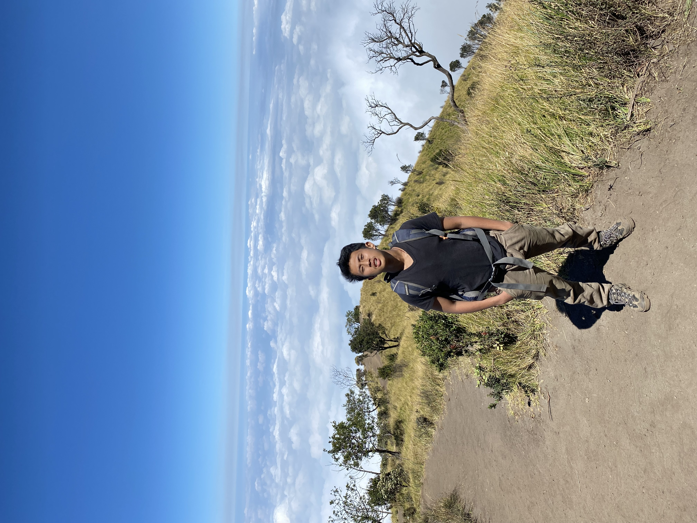

Halo, saya Faiz Zaydan... Seorang Manusia yang kebetulan
Seorang Yg Sedang Sendiri. Sedang sibuk menikmati hidup
dengan cara menjalankannya. Biasa diucapkan selamat pada tanggal 04
Oktober.

Saya mengambil jurusan Teknik Komputer Jaringan di Smk Nu Maarif
Kudus dan semoga lulus tepat waktu pada tahun 2025. Terdengar
tidak penting, tapi setidaknya saya bisa memulai obrolan dengan,
“…sebagai anak IT,”
Sedari kecil saya sudah suka dengan dunia IT,Tanpa saya sadar
cukup konsisten sampai bisa naik tingkat. Saya terus belajar
belajar dan belajar, ntah sampai kapan saya bisa berhenti belajar.
andai saja bisa hehehe
Sedikit hal tentang blog ini, semua tulisan saya sebisa mungkin
dikemas dengan serius, tapi ada bercandanya. Karena saya kalo
bercanda memang serius.
Saya suka dengerin lagu Dewa19, Hindia, Nadin amizah, dan banyak
lagi. Terkadang ketika banyak pikiran lagu merekalah yg menemani,
Hmmm mau sampai kapan di temenin lagu. Saya suka nonton film atau
series, sesekali juga suka baca buku, tapi itu kalo udah capek
main game.
Sebelum masuk ke bagian selanjutnya, persilakan saya untuk
mempersilakan kamu, pembaca blog ini, baik yang baru ataupun lama,
baik yang nggak sengaja nge-klik halaman ini atau memang secara
sadar punya intensi tertentu: apa pun tujuannya, ya…. jangan
macam-macam karena di blog ini ada
CCTV (mahal lagi).